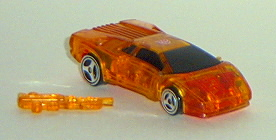
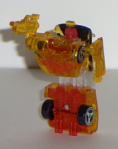
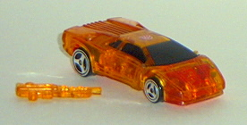
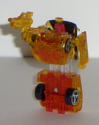

 
Size : Spychanger (comes packaged individually)
Color Scheme : Transparent orange, transparent red, black, clear plastic, and some red, orange-yellow, and chrome silver
Rating : 5.3
R.E.V.'s vehicle mode
is a sportscar. (R.E.V. is short for
R
ace
Ev
olution, by the
way.) If it wasn't for the Autobot symbol on the top, I'd swear this was
a Hot Wheels car. It's exactly the same size as one, and it even has similar-styled
wheels. R.E.V.'s vehicle mode is very nice, with no extras whatsoever-
robot-wise, anyway. R.E.V.'s gun cannot be stored in this mode, like the
other Wave 1 Spychangers, and it really cheeses me off that I have to put
the gun in another container when I want to keep him in this mode. It wouldn't
have been that hard to integrate the gun into this mode, honestly- just
store it on the underside. Still, that small quibble aside, this is a really
nice-looking car, especially for such a cheap price. The orange-yellow
lining around the car is pretty neat, as is the large eagle outline painted
on the hood, with the letters "TF" on it (obviously short for Transformer).
R.E.V.'s transformation
is the same as the other Wave 1 Spychangers- seperate the two car halves
slightly to reveal the upper leg extensions, pull the robot arms out, flip
the hood down to reveal the robot head, and you're done. I've never liked
the Spychanger's robot modes, overall, and R.E.V.'s isn't any exception,
although it's definitely not the worst-looking. It's just that the arms
can only move at the shoulders in this mode, and that definitely limits
playability a lot. R.E.V.'s legs are stuck together in one piece, so there
goes any leg articulation. His head is also kinda small proportionally,
and his chest sticks out way too far for my liking. Still, the color combo
is pretty good- the whites, reds, and yellows are nice together. But it's
still not near enough to save this toy.
A pretty bad toy in
robot mode, although the vehicle mode looks rather nice. An okay toy for
a Spychanger.
 R.E.V.
(2002 Version; Transparent, KB Toys Exclusive)
R.E.V.
(2002 Version; Transparent, KB Toys Exclusive)


Size
: Spychanger (comes packaged
individually)
Color Scheme
: Transparent orange,
transparent red, black, clear plastic, and some red, orange-yellow, and
chrome silver
Rating
: 5.3
To everyone's surprise, a KB Toys Exclusive, transparent version of R.E.V. came out in summer 2002, packaged individually (and with tech specs on the back this time). Unlike most of the other Transparent Spychangers, R.E.V. is quite a bit different color-wise from the previous version. His yellow has been replaced with a very cool transparent orange, and the red has been switched for a slightly lighter shade of transparent red. His small amount of white has also been changed to clear plastic. The overall effect is very cool-looking- not only can you see the "internals" of the toy, but the lines and detailing on the vehicle mode looks very nice next to the transparent stuff, and the three colors go incredibly well together. As such, this is one of the few Transparent Spychangers that you might want to consider buying, even if you have the original version- that is, if you're fond of Spychangers to begin with, of course. (An oddity, though- R.E.V. stands for R ace E xertion V ehicle on this package, instead of it standing for R ace Ev olution as it did on the original version.)
 R.E.V.
(2003 Version; Transparent, KB Toys Exclusive)
R.E.V.
(2003 Version; Transparent, KB Toys Exclusive)
Size
: Spychanger (comes packaged
individually)
Color Scheme
: Transparent orange,
transparent green, and some red, bright red, transparent purple, black,
and chrome silver
Rating
: 5.3
The 2003 version of R.E.V.
is almost EXACTLY the same as the 2002 version; so close, in fact, that
I didn't even bother getting it. The only differences are that the "line
paint detailing" on the car top is slightly brighter, and the clear plastic
pieces are now transparent purple or green.
Not really worth getting,
even IF you're a completist. Far too similar to the 2002 version.
Review by Beastbot